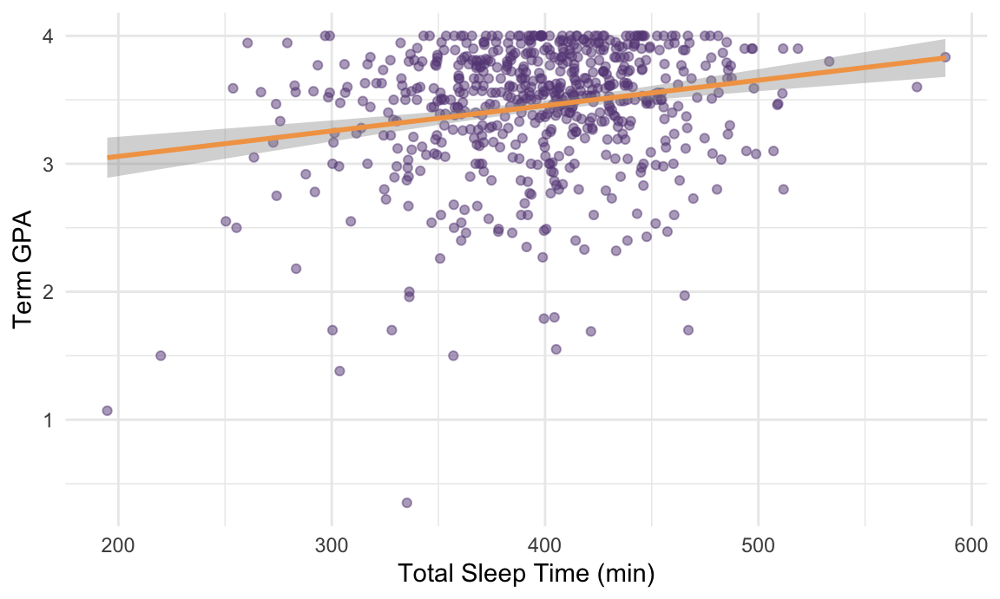
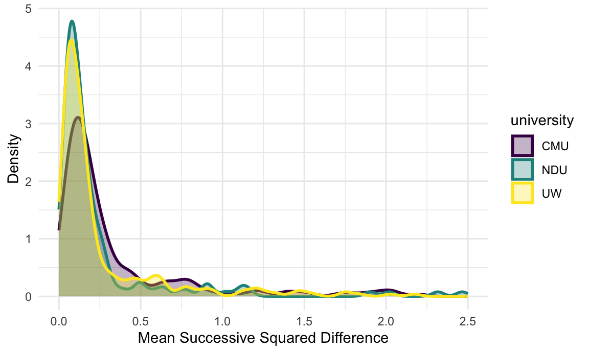
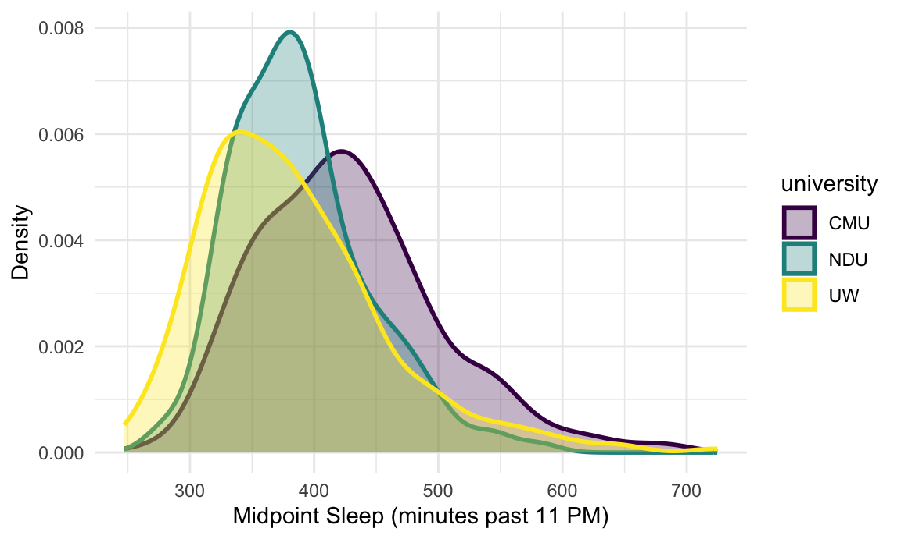
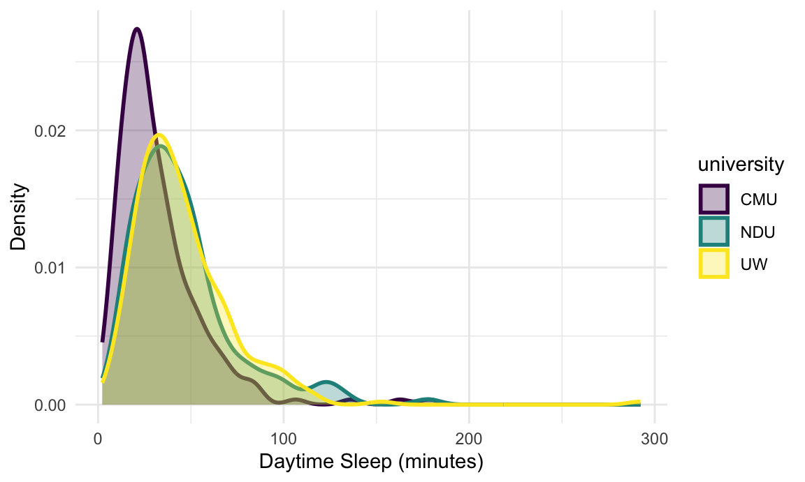
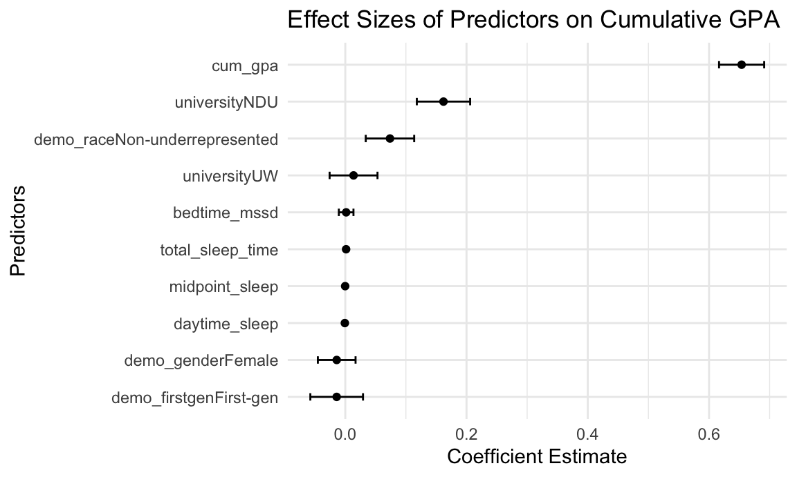
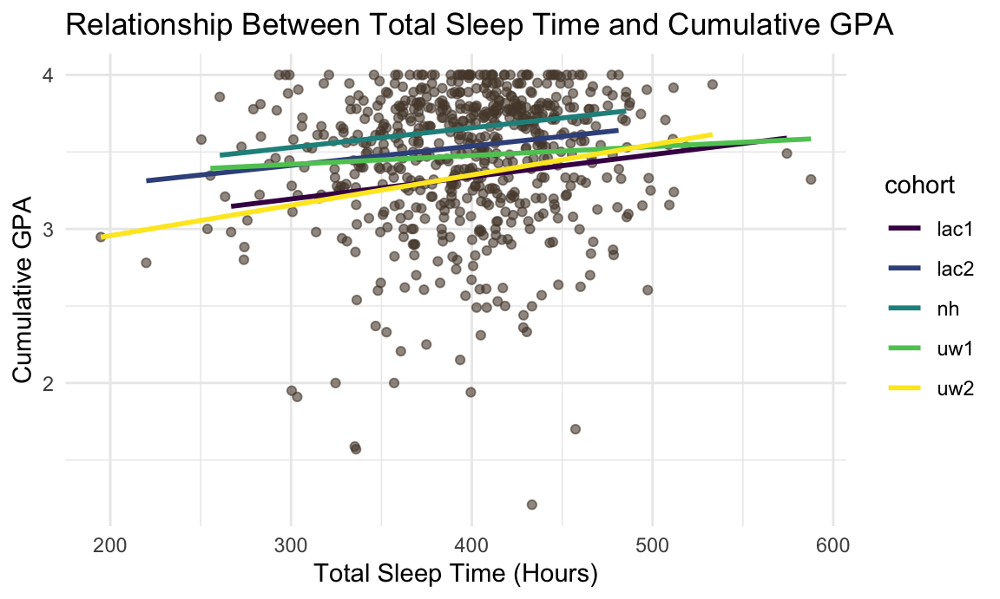

Statistical Analysis
In this page, we use some typical statistical models to further explore the impact of students’ sleeping patterns on their GPA.
Simple Linear Regression
To begin with, fit simple linear regression model to demonstrate the
individual impact of each sleeping measure on students’ GPA. Each time
we use one sleeping measure as the predictor to predict the
term_gpa.
Below are plots and statistics of the simple linear regression models.
COMMENTS
Total Sleep Time
ggplot(data = sleep_df, aes(x = total_sleep_time, y = term_gpa)) +
geom_point(color = "#664785", alpha = 0.5) +
geom_smooth(method = "lm", se = TRUE, color = '#F2A354') +
labs(
x = "Total Sleep Time (min)",
y = "Term GPA"
) +
theme_minimal()
sp_total_sleep = lm(term_gpa ~ total_sleep_time, data = sleep_df)
tidy_lm <- broom::tidy(sp_total_sleep,conf.int = TRUE)
# Filter out intercept
tidy_lm <- tidy_lm %>%
filter(term != "(Intercept)") Variability in Bed Times
plot_bedtime2 <- sleep_df %>%
ggplot(aes(x = bedtime_mssd, fill = university, color = university)) +
geom_density(alpha = 0.3, linewidth = 1) +
labs(x = "Mean Successive Squared Difference", y = "Density") +
xlim(c(0,2.5))+
theme_minimal() +
theme(
strip.text = element_text(size = 14),
plot.title = element_text(size = 16, face = "bold", hjust = 0.5)
)
plot_bedtime2
Sleeping Midpoint
plot_midpoint <- sleep_df %>%
ggplot(aes(x = midpoint_sleep, fill = university, color = university)) +
geom_density(alpha = 0.3, linewidth = 1) +
labs(x = "Midpoint Sleep (minutes past 11 PM)", y = "Density") +
theme_minimal() +
theme(
strip.text = element_text(size = 14),
plot.title = element_text(size = 16, face = "bold", hjust = 0.5)
)
plot_midpoint
Daytime Sleep
plot_daysleep <- sleep_df %>%
ggplot(aes(x = daytime_sleep, fill = university, color = university)) +
geom_density(alpha = 0.3, linewidth = 1) +
labs(x = "Daytime Sleep (minutes)", y = "Density") +
theme_minimal() +
theme(
strip.text = element_text(size = 14),
plot.title = element_text(size = 16, face = "bold", hjust = 0.5)
)
plot_daysleep
Statistics
sleep_df %>% select(total_sleep_time, bedtime_mssd,
midpoint_sleep, daytime_sleep, university) %>%
tbl_summary(
by = university,
statistic = list(
all_continuous() ~ "{median} ({p25}, {p75})",
all_categorical() ~ "{n} / {N} ({p}%)")) %>%
add_p() %>%
add_overall()| Characteristic | Overall N = 6341 |
CMU N = 2081 |
NDU N = 1471 |
UW N = 2791 |
p-value2 |
|---|---|---|---|---|---|
| total_sleep_time | 400 (367, 430) | 394 (359, 422) | 384 (351, 420) | 409 (385, 439) | <0.001 |
| bedtime_mssd | 0.14 (0.07, 0.29) | 0.17 (0.10, 0.39) | 0.12 (0.07, 0.22) | 0.13 (0.06, 0.28) | <0.001 |
| midpoint_sleep | 388 (345, 438) | 421 (372, 468) | 381 (346, 414) | 371 (327, 423) | <0.001 |
| daytime_sleep | 35 (23, 51) | 25 (18, 40) | 40 (26, 54) | 40 (27, 58) | <0.001 |
| 1 Median (Q1, Q3) | |||||
| 2 Kruskal-Wallis rank sum test | |||||
lm_fit = lm(term_gpa ~ university + demo_race + demo_gender + demo_firstgen + bedtime_mssd + total_sleep_time + midpoint_sleep + daytime_sleep + cum_gpa, data = sleep_df)
# Tidy the regression results
tidy_lm <- broom::tidy(lm_fit)
# Filter out intercept
tidy_lm <- tidy_lm %>%
filter(term != "(Intercept)")
# Plot coefficients
ggplot(tidy_lm, aes(x = reorder(term, estimate), y = estimate)) +
geom_point(fill = "steelblue") +
geom_errorbar(aes(ymin = estimate - std.error, ymax = estimate + std.error), width = 0.2) +
coord_flip() +
labs(
title = "Effect Sizes of Predictors on Cumulative GPA",
x = "Predictors",
y = "Coefficient Estimate"
) +
theme_minimal()
ggplot(sleep_df, aes(x = total_sleep_time, y = cum_gpa)) +
geom_point(alpha = 0.6, color = '#554637') +
geom_smooth(method = "lm", se = FALSE, aes(color = cohort)) +
labs(
title = "Relationship Between Total Sleep Time and Cumulative GPA",
x = "Total Sleep Time (Hours)",
y = "Cumulative GPA"
) +
theme_minimal()
ggplot(sleep_df, aes(x = factor(demo_gender), y = cum_gpa, fill = factor(demo_gender))) +
geom_boxplot() +
labs(
title = "GPA Differences by Gender",
x = "Gender",
y = "Cumulative GPA",
fill = "Gender"
) +
theme_minimal()
Bootstrapping Part
set.seed(111)
boot_straps =
sleep_df|>
modelr::bootstrap(1000) |>
mutate(
strap = map(strap, as.tibble),
models = map(strap, \(df) lm(term_gpa ~ university + demo_race + demo_gender + demo_firstgen + bedtime_mssd + total_sleep_time + midpoint_sleep + daytime_sleep + cum_gpa, data = df)),
results = map(models, broom::tidy)
) |>
select(.id, results) |>
unnest(results)
boot_result =
boot_straps |>
group_by(term) |>
summarise(
boot_est = mean(estimate),
boot_se = sd(estimate),
boot_ci_ll = quantile(estimate, .025),
boot_ci_ul = quantile(estimate, .975),
)
boot_result## # A tibble: 11 × 5
## term boot_est boot_se boot_ci_ll boot_ci_ul
## <chr> <dbl> <dbl> <dbl> <dbl>
## 1 (Intercept) 0.657 0.310 0.0751 1.30
## 2 bedtime_mssd -0.000896 0.0118 -0.0328 0.0167
## 3 cum_gpa 0.656 0.0502 0.562 0.754
## 4 daytime_sleep -0.000583 0.00109 -0.00260 0.00145
## 5 demo_firstgenFirst-gen -0.0165 0.0497 -0.115 0.0795
## 6 demo_genderFemale -0.0145 0.0316 -0.0736 0.0443
## 7 demo_raceNon-underrepresented 0.0766 0.0481 -0.0105 0.171
## 8 midpoint_sleep -0.000188 0.000331 -0.000852 0.000450
## 9 total_sleep_time 0.00133 0.000403 0.000498 0.00210
## 10 universityNDU 0.159 0.0406 0.0769 0.234
## 11 universityUW 0.0124 0.0439 -0.0795 0.0953# Tidy the regression results
boot_result |>
filter(term != "(Intercept)") |>
ggplot(aes(x = reorder(term, boot_est), y = boot_est)) +
geom_point(fill = "steelblue") +
geom_errorbar(aes(ymin = boot_ci_ll, ymax = boot_ci_ul), width = 0.2) +
coord_flip() +
labs(
title = "Effect Sizes of Predictors on Cumulative GPA",
x = "Predictors",
y = "Coefficient Estimate"
) +
theme_minimal()